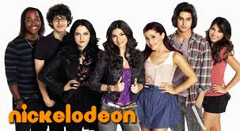
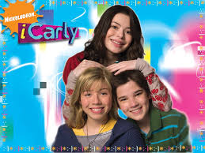

Mejores series 2013
Las mejores series del año 2013:
VICTORIUS
Victorius es una serie comica muy famosa en Estados Unidos.
Es una escuela donde todos tienen un talento, menos su hermana de Tory.
Kat es una compañera de Tory y es muy ilusa.
Género: Comedia
Distribuidora: Warner Bros. Pictures
Clasificación: B
Fecha de estreno: 23 de agosto 2013

"¡CARLY!"
Es una serie para jovenes muy graciosa,son tres chicos con un adulto llamado Espenser.
Ensaña que no importa la edad que tengas para divertirte.
Ha sido una serie muy famosa puesto que los chicos son muy diferentes y divertidos.
Género: Comedia
Distribuidora: Hume. Pictures
Clasificación: B
Fecha de estreno: 23 de febrero 2013

DRAKE & JOSH
Es una serie para jovenes muy vista aqui en Mexico.
trata de dos jovenes llamados Dreak & Josh son son dos hermanastros que se quieren como hermanos.
Tienen una hermana llamada Megan la cual ños hace sufrir, haciendo travesuras ingenuas.
Ella es ingeniusamente lista.
Esta serie es muy divertida y chistosa.
Género: comedia
Distribuidora: Kiatkamon
Clasificación: B
Fecha de estreno: 16 de Diciembre 2013
Liv and Maddie
Liv and Maddie fue creada por John Beck y Ron Hart,
y es producida en forma
conjunta por Beck &HartProductions, OopsDoughnutsProductions e It's a Laugh Productions.3 4
Beck y Hart son un equipo de producción/escritura que en sus trabajos, incluyen a AccordingtoJim,
HeyArnold! y ShakeIt Up!. En la producción ejecutiva también forman parte, Andy Fickman (She'stheMan),
BetsySullenger (YouAgain) y John Peaslee (8 Simple Rules).
En un principio, Beck y Hart habían escrito un guión de un proyecto llamado Bits and Pieces,
que cuenta con una familia mixta similar a programas como The Brady Bunch y StepbyStep.
El casting se llevó a cabo durante la primavera de 20125 y sólo produjo el episodio piloto.
El show trataba de JodieSullenger (Kali Rocha), madre de Alanna (Dove Cameron) y Sticky (Joey Bragg),
que se casaba con Pete Fickman (Benjamin King), padre de Crystal (CoziZuehlsdorff) y Brody (TenzingNorgayTrainor),
y que los seis tenían que adaptarse a la vida bajo el mismo techo..

Estas son algunas series de comedia del año 2013. Espero les haya gustado...!